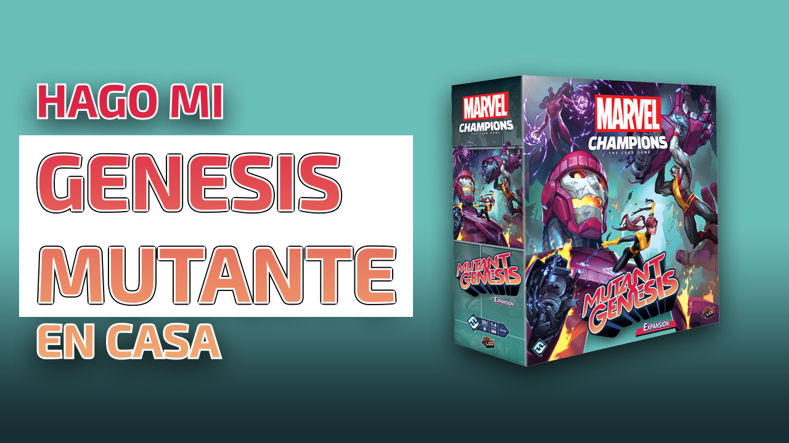

New Marvel Heroes!
According to different sites, the publisher Fantasy Flight Games, would be working on new heroes. Like they have done before, every few months, there has been new heroes. In the last 6 months, FFG has been slowly working on new heroes, having the fans a little nervous about coming up with new expansions for the game. Recently they have finally said they will be printing some new X-men heroes. These 2 new heroes will be X-23, the new wolverine and Psylocke.
Check out this tutorial to learn 5 amazing tips on doing your own homebrew boardgames. These aren't general tips, but special things I have learned that have been very useful for me.
In this tutorial we will learn the basics of how to build a customized box. We will start from designing it in photoshop and then printing and actually building and plotting over a cardboard box.
This week we had the chance to try out the Green Goblin expansion for Marvel Champions the Living Card Game. It turned out to be fun and hard, which you all know that for us it is the exact definition of fun. We had a great time with Morris (which you can see in the picture). After several tries we were able to beat the goblin in expert mode. No only does the expansion bring one scenario, but actually you get to play 2 completely different scenarios against the Green Goblin. Also, it brings a bunch of new modules you can add to your game.
ABOUT ME
My name is Mori. I am a boardgame fan and a passionate boardgame amateur designer. I love playing games as well as developing cool twists on existing games. I started doing my own boardgames back when we were still going through the Covid-19 pandemic. I had extra time, and I couldn't get my hands on new games. To cheer me up, I decided to start trying to print my own. This turned out to be my favorite hobby. It makes me concentrate and learn new handcrafting techniques. If you want to know more about me you can click on the links to my social media on the bottom!